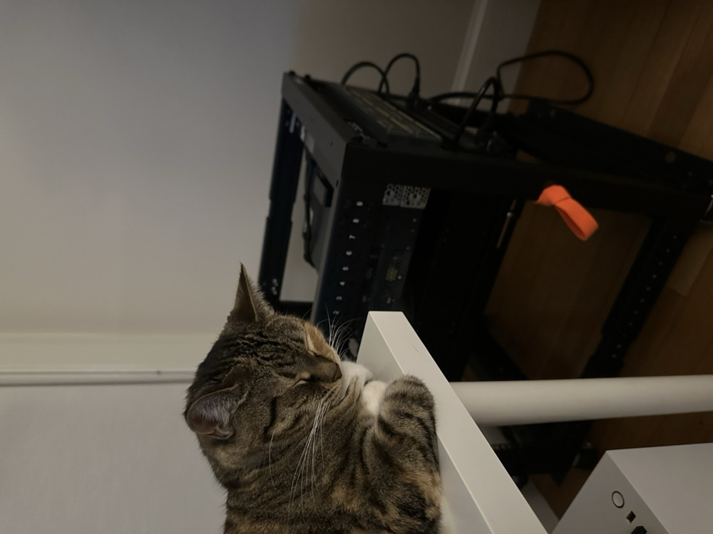

Mattias
Rask
Self-taught engineer. I build security tools, AI agents, and the low-level pieces underneath: covert channels, traffic mimicry, x86 emulation, fine-tuned LLMs. Most of it runs on a homelab I host myself.
bettermemory
A markdown folder and 25 MCP tools that give the model a sense of time.
Storing facts is the easy half of agent memory; knowing a fact has held up weeks and forty commits later is the hard half. bettermemory is built around the hard half: plain markdown and a local MCP server underneath, an extension of the model in behavior. It changes four things:
-
It checks before it trusts
Every hit carries a staleness verdict: calendar age, moved file paths, and commits landed since the fact was last confirmed.
-
It asks before it remembers you
Retrieval is opt-in per turn, claims about you stage for your sign-off, and pasted secrets never reach disk.
-
Every use leaves a record
The server logs which sentence a memory shaped, and flags the searches the model should have run but skipped.
-
It carries state across agents
Loops and subagent swarms journal into one shared store; the next session picks up mid-thought instead of cold.
{
"snippet": "Auth middleware lives in src/auth/middleware.py",
"relevance": "high",
"staleness_verdict": "spot_check_recommended",1
"path_drift": { "missing": ["src/auth/middleware.py"] },2
"commit_drift_count": 12
}
staleness_verdict folds calendar age, path drift, and commit drift into one signal
2 path_drift means the cited file moved since the fact was last confirmed
- Release
- v3.10.0 · June 2026 · MIT
- Surface
- 25 MCP tools · ~2,540 tests
- Clients
- Claude Code · Cursor · any MCP client
- Write-up
- Why I built it
Projects
Source isn’t public. Happy to walk through any of these on a call.
-
Chromatophore
PrivateA traffic-mimicry suite. Reshapes TCP and UDP streams to look like fifteen well-known protocols on the wire.
-
PineappleGPT
PrivateClaude-driven passive wireless recon agent for the Hak5 WiFi Pineapple Mk7. Pineapple as sensor, Claude as the reasoning loop.
-
Honeypot
PrivateA high-interaction honeypot disguised as a WordPress AI blog. Single Docker container on Cloud Run behind Cloudflare.
-
WhalEmu
PrivateA real-mode x86 CPU emulator with a browser-based step debugger. Write assembly, assemble it, walk through it instruction by instruction.
-
Homelab MCP
PrivateThree ZimaBoards on Tailscale running my own Forgejo, Sliver C2, Velociraptor DFIR, Caldera, BloodHound, and a cross-board restic backup ring.
About
Self-taught. I learn by building the thing.
Two years into software, cybersecurity, and embedded systems, mostly building rather than reading about it. Most of what’s here shipped this past spring; CCNA and PT1 are up next.
Off-keyboard: drawing, photo and video editing, ham radio, the outdoors, and my cat.
-

Networking rack, pre-boards. -

Homelab. Three ZimaBoards on Tailscale. -

Custom Dual C5 board, mid-flash. -

Arduino on the bench. -

Before anti-detection. -

After anti-detection. -

Georgia.